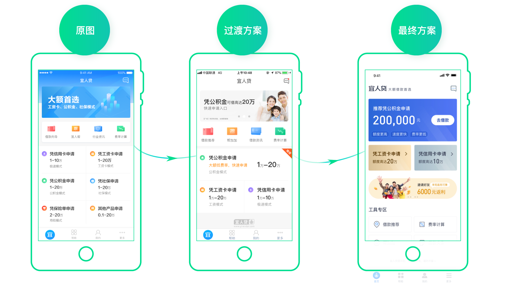
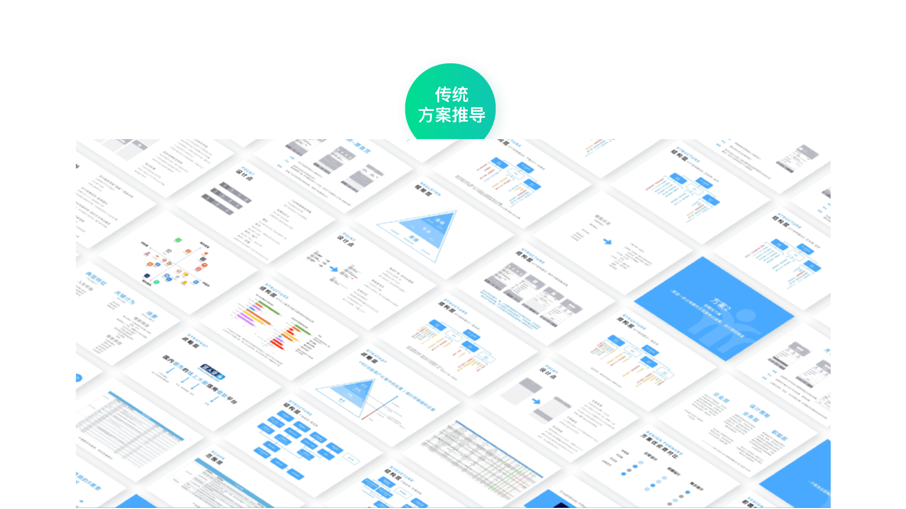
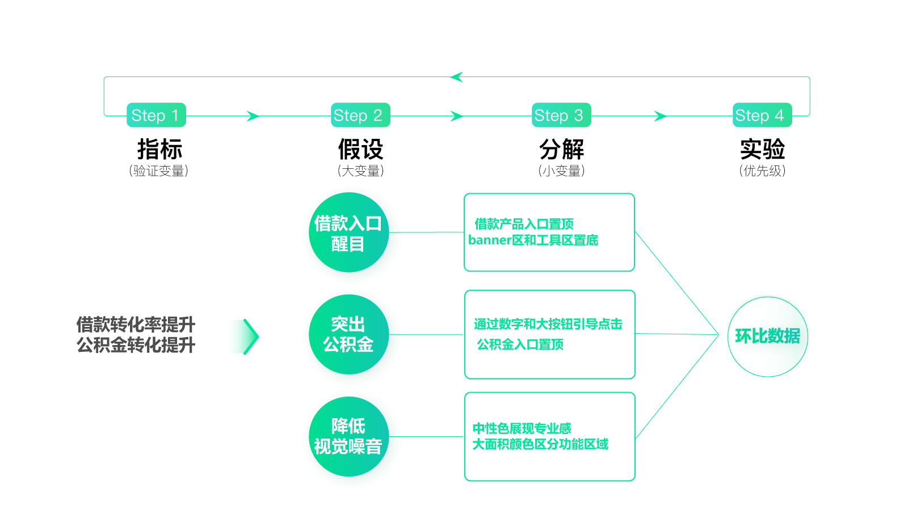
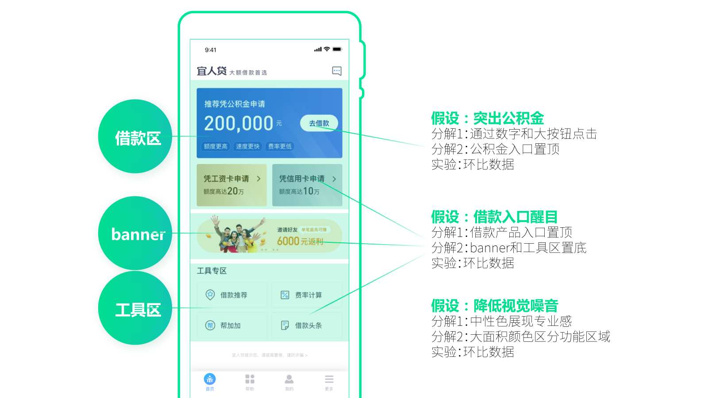
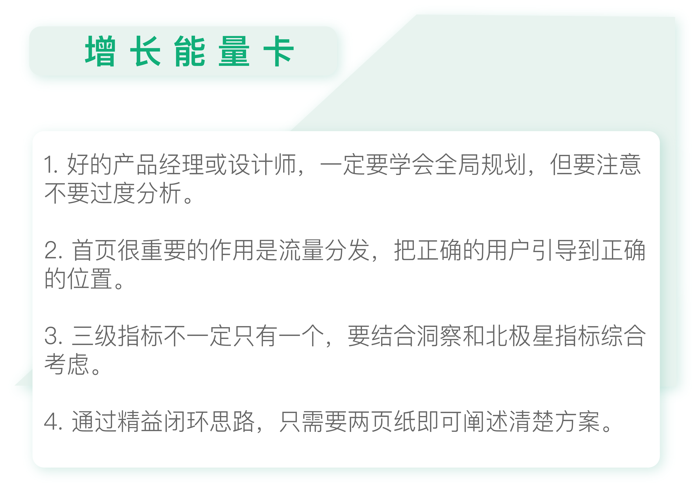

- 00 开篇词 人人都是增长官.md
- 01 预习 增长小白如何“弯道超车”？.md
- 02 预习 如何理解“增长”？.md
- 03 预习 不同职能如何做好增长？.md
- 04 预习 做增长如何处理职能间的矛盾？.md
- 05 正确目标找不对，天天加班也枉然.md
- 06 活学活用北极星指标.md
- 07 OKR如何助力增长？.md
- 08 不懂用户调研？那就对了！.md
- 09 调研目标：在差异性洞察中找到爆破点.md
- 10 数据分析：在“花式对比”中发现玄机.md
- 11 用户分类：围绕北极星指标细分人群.md
- 12 用户访谈：像侦探一样寻找破案线索（上）.md
- 13 用户访谈：像侦探一样寻找破案线索（下）.md
- 14 提炼用户差异，发现增长契机.md
- 15 挖掘产品优势，打破增长瓶颈.md
- 16 定位营销差异，抢占用户心智.md
- 17 一级方向：找到增长爆破点.md
- 18 B端产品如何调研？.md
- 19 全局规划增长机会.md
- 20 统筹全局的用户增长地图.md
- 21 案例解析：定义关键增长指标.md
- 22 正负双向洞察，找准切入点.md
- 23 二级机会：制定增长策略.md
- 24 为一家濒临破产的公司制定增长策略（上）.md
- 25 为一家濒临破产的公司制定增长策略（中）.md
- 26 为一家濒临破产的公司制定增长策略（下）.md
- 27 为什么指标数据怎么优化都不提升？.md
- 28 案例解析：打造增长闭环（上）.md
- 29 案例解析：打造增长闭环（下）.md
- 30 案例解析：唤醒沉睡用户（上）.md
- 31 案例解析：唤醒沉睡用户（下）.md
- 32 没有分解，就无缘增长.md
- 33 四个要点颠覆传统需求文档.md
- 34 三级落地：无限场景应用.md
- 35 手把手教你设计一次成功的实验（上）.md
- 36 手把手教你设计一次成功的实验（下）.md
- 37 积少可成多，别针换别墅.md
- 38 四级延续：增长组件库案例.md
- 39 以用户为中心增长.md
- 增长导航图 增长专栏的知识架构是怎样的？.md
- 尾声 结束意味着新的开始.md
- 预习答疑 你需要一张思维导图吗？.md
29 案例解析：打造增长闭环（下）
你好，我是刘津。
今天我们接上一讲的内容，继续介绍一个关于首页改版的案例。
案例3：首页改版
说到首页改版，我想你一定不会陌生，这是全公司都会关注的大事。别看好像只是一个页面，但里面会牵扯到多方利益资源。所以，首页的优化非常不好做，需要协调各种关系，让大家都能尽量满意。
但是内部满意了，用户又不一定会满意。任何的调整都可能会引起用户短期的不适应，但是一直不改又不行。所以，首页改版这事真的是横竖都不好做。
我们团队最近就遇到过这样的窘境：由于业务有所调整，需要把首页的产品模块由6个改成3个。设计师机械地照做，结果发现页面不够长，撑不满一屏，只好把上面的banner和图标区域加大了一些，又在底部加了个logo。很明显这完全谈不上任何规划和“设计”，只是用补洞的方式在被动支持需求。
最后的结果显而易见，所有人都不满意。包括设计师本人也觉得这样改很丑，但是需求就是这么提的，他也觉得很无奈。

图中最左边是改版前，中间是第一次修改的版本，右边是最终的方案。从图中可以看到，修改后的版本虽然满足了需求，但是整个界面看上去捉襟见肘。这是因为界面是一个整体，任何一点改动都可能会影响到整体。
这让我突然想起一位美术老师说的：“你把最好看的眼睛、眉毛、鼻子、嘴、脸型摆到一起，未必是一个美女，因为局部好看放到整体未必是好的”。我想这是一样的道理。
所以，好的产品经理或设计师，一定要学会全局规划，而不是头痛医头，脚痛医脚。
那么具体应该怎么优化呢？在过往的工作经验中，我发现大家在做具体优化的时候又容易走另一个极端，就是过度分析。

比如上图，这位设计师写了近百页PPT，用到了各种方法论、做了非常全面而细致的分析，并给出了两个设计方案。这样做耗时耗力不说，还非常容易遭到产品经理的质疑：“这个地方不符合我的要求，我的业务诉求是这样子的……”可以说双方完全是在鸡同鸭讲，因为他们的思路根本就不在一个频道上。
不考虑整体也不行，面面俱到的分析也不行，那到底要怎样呢？我们还是来试试精益闭环的思路。
指标
首先是指标，从用户增长地图上我们可以看到“优化首页”对应的指标是借款转化率，也就是说这个指标是一个基础的必须要考虑的指标。另外首页有一个很重要的作用，就是流量分发，把正确的用户引导到正确的地方去。
那么在这里应该如何确定主推什么内容呢？还记得我们在这里做过的二级洞察的内容吗，就是公积金人群的资质更好、获批通过率更高、获批额度更高、逾期率更低。这完全符合我们低成本高贷款余额的目标。
所以，我们需要在首页引导更多用户点击公积金产品。也就是说，首页“公积金点击提升”是我们另一个重要目标。鉴于当时公司更关注降低成本，所以我们只要在保证“借款转化稳中有升”的情况下“提升公积金产品的转化率”就可以了。

当然这个指标不是说我们自己知道就行了，还要让大家达成一致意见，并根据指标排列优先级。
所以，我们约了一个会议，把所有相关的产品经理和运营都叫过来，明确这次改版的目的和指标。在得到大家的认可后，再让所有人畅所欲言的提需求，把这些需求一一记录下来。这里面当然也包括一些看起来不太靠谱的需求，比如换肤，比如照着某某竞品做个一样的酷炫的功能等等。
接下来，我们根据北极星指标排列优先级，把和提升指标关联度强的排在前面，关联度小的排在后面。完全无关的，比如换肤之类的划掉。由于有了指标做指导，即便可能会有损个别人的利益，大家也都能快速达成一致。
比如，我们以前一直把banner放在最明显的位置，但实际上banner点击率很低。而且经过测试后发现，banner放在底部也并不影响点击率，最重要的是它的优先级肯定不如产品推荐更重要。这样的话就可以把它放在不那么显眼的位置，取而代之的是固定的产品推荐位置。
假设
说完指标，我们再看看假设。
因为指标是“借款转化率提升，公积金点击提升”，而其中公积金转化提升更加重要。所以，对应的假设就很容易得出了，分别是“借款入口醒目”“突出公积金”“降低视觉噪音”。
分解
第三步是分解。围绕每一个假设，我们需要考虑用什么样的方式能够达成。
比如，针对“借款入口醒目”这个假设，对应的分解策略是“借款产品入口置顶”“banner区和工具区置底”。原因我之前已经分析过了，banner区和工具区对提升北极星指标都没有那么重要。之前把它们放在上面只是因为思维定势，因为大家都是这么做的，或者已经习惯banner放在最上方了，却没有认真的思考背后的意义是什么。
针对“突出公积金”这个假设，对应的分解策略是“通过数字和大按钮引导点击”“公积金入口置顶”。以前公积金模块只是相对来说位置靠前、面积更大一些，但并没有特别突出的感觉，现在则做了很大的调整。
针对“降低视觉噪音”这个假设，对应的分解策略是“中性色展现专业感”“大面积颜色区分功能区域”。视觉的同学最终通过颜色对比，很好的突出了重要的区域，弱化了不重要的部分。

而我们再看以前的版本。旧版本在视觉表现上明显缺乏层次感，看不出优先级的区分。这是因为当时的设计者对于优先级并没有十分明确的判断。
实验
最终的方案说明如下图。以前我们总是需要写很多页的方案推导及详细的说明，但现在只要一页纸即可。

从图中你可以看到，借款区替代了原来banner的位置，放在了最显眼的地方，颜色十分突出，衬托出大大的数字“200000”，展现了我们的高额度。banner和工具区则被放在了下面的位置上。当然，这个方案还有一些其它的小细节。比如最上方有“宜人贷，大额借款首选”字样，突出产品定位等等。
右边是辅助说明，比如每个具体的假设和对应的分解是什么，如何体现在界面中。这样我们通过精益闭环思路和方案阐述这两页纸，就可以非常清楚的阐述整体设计方案，并且保证和业务方站在同一个频道上对话。这种方式完胜过去的百页PPT或者不经大脑的“补洞”行为。
上线后数据表现完全超出了预期，虽然整体借款转化提升不多，但公积金入口的点击提升了44%，公积金用户占比的提升极大地降低了风险成本，为公司带来了可观的收益。

思考题
如果你有接触过类似的工作，尝试用精益闭环的思路重新梳理，看是否有不一样的结果？
欢迎把你的思考和疑问通过留言分享出来，与我和其他同学一起讨论。如果你觉得有所收获，也欢迎把文章分享给你的朋友。
© 2019 - 2023 Liangliang Lee. Powered by gin and hexo-theme-book.